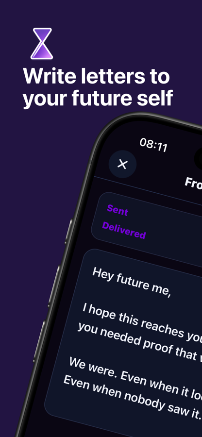
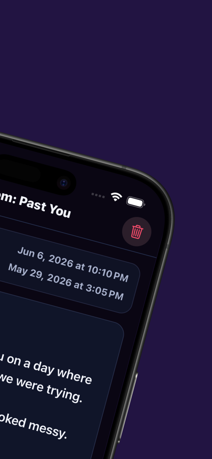
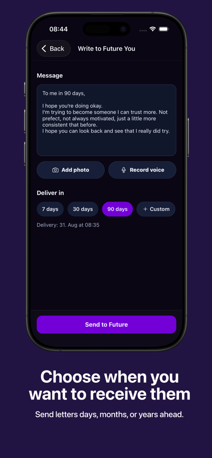
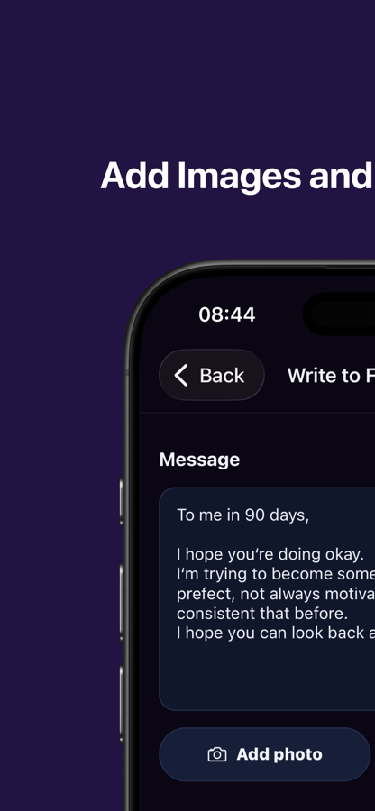
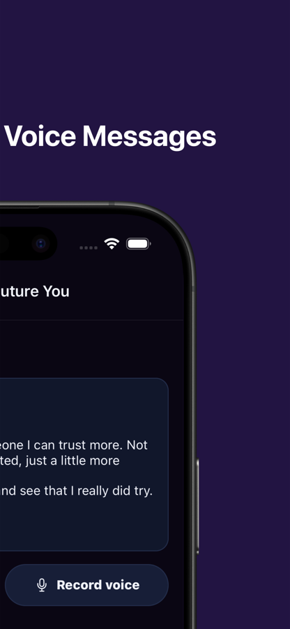
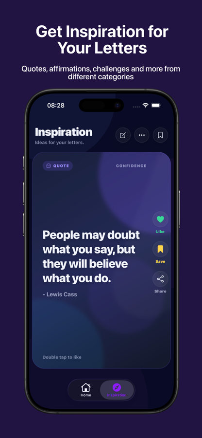
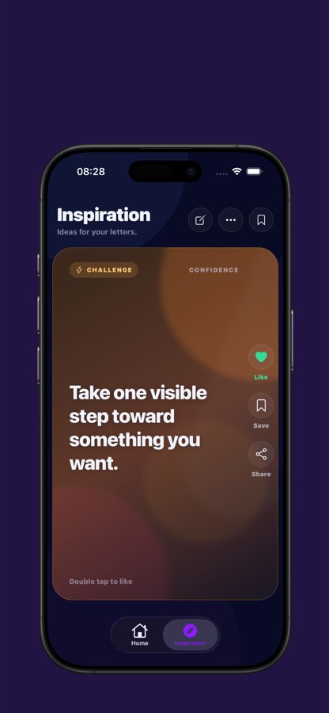
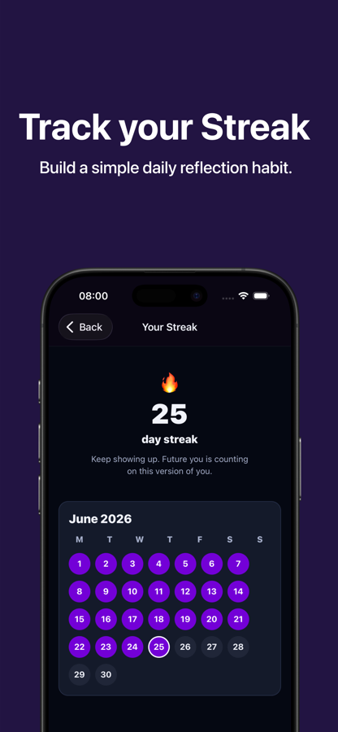
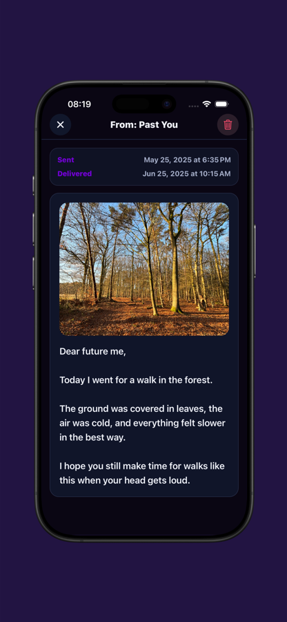
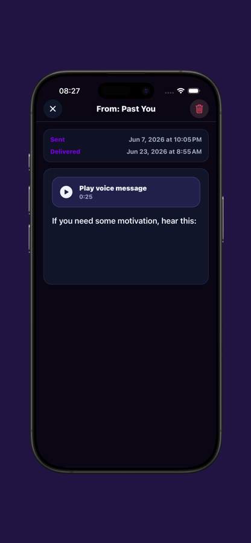

Write what is true right now.
A promise. A difficult week. A tiny win you do not want to forget. Write freely, without turning it into a performance.
A private reflection ritual for iPhone
Write letters to your future self, preserve meaningful moments, and choose when they return. A calmer way to notice how far you have come.
Write today.
Receive later.
Remember who you were becoming.
Your thoughts deserve a destination
Future Yourself turns reflection into something you can feel. Capture a thought, send it forward, and let a past version of you show up at the right moment.
A promise. A difficult week. A tiny win you do not want to forget. Write freely, without turning it into a performance.
Send a letter seven days, ninety days, or years ahead. You decide when your message should return.
Open a message from your past and see your progress with fresh eyes. Ordinary moments become worth keeping.
Inside Future Yourself
Explore the app from writing your first letter to receiving it later. Swipe through the same screenshots shown on the App Store.










Swipe to explore →
More than a letter
Add photos and voice notes when text cannot carry the whole moment. When the message returns, the context returns with it.
Write honestly for the one person who truly understands: your future self.
Preserve how a place looked or how your own voice sounded in that moment.
Choose a quick preset or any date in the future for your letter to arrive.
Use prompts, quotes, affirmations, and small challenges when you feel stuck.
A habit without the pressure
Build a simple reflection streak and make space for yourself a little more often. No public feed, no comparison, and no need to make every day profound.
Local-first. Your letters, photos, and voice notes stay on your device.
Made for real life. Short notes count. Quiet progress counts.
Available now on iPhone
It only takes a minute to write. It might arrive exactly when you need it.
Download on the App Store →